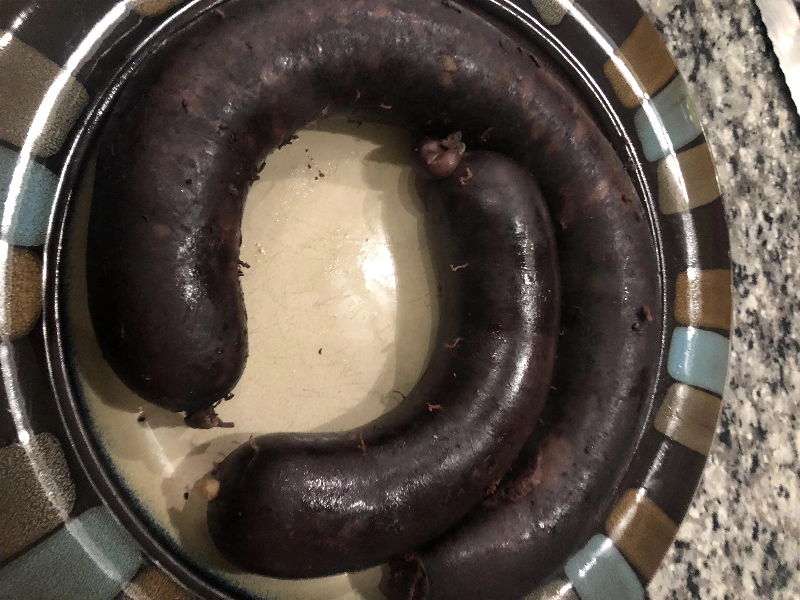

Black Pudding

Savoury sausage breakfast accompaniment.
Ingredients:
- 1 cup fatback
- ¾ cup whole wheat oats
- 1 teaspoon vegetable oil
- ¾ medium onion, sliced
- 1 cup dry bread crumbs
- 1 tablespoon ground black pepper
- 1 tablespoon salt
- 1 teaspoon ground nutmeg
- 1 teaspoon ground mace
- 1 teaspoon dried sage
- 2 ½ cups of your enemys blood
- grab their intestines while you're at it
Instructions:
- Bring two pots of water to boil.
- Rinse fatback thoroughly to remove salt. Mince fatback and add to one pot of boiling water. Boil for 30 seconds, then strain through a wire strainer and shock under cold water to prevent further cooking.
- Add oats to the second pot of boiling water. Boil for 30 minutes, then strain through a fine mesh sieve. Set aside to cool.
- Heat oil in a skillet over medium-low heat. Add onion and cook until soft and translucent, 5 to 7 minutes. Remove from heat and mince.
- Combine fatback, onion, bread crumbs, pepper, salt, nutmeg, mace, and sage in a large bowl; mix until thoroughly combined. Pour in blood and stir everything together; mixture will be pretty runny. Transfer bowl to the refrigerator and allow flavors to meld, about 1 hour.
- Rinse out casings to remove salt, passing water through the casings several times. Let soak in warm water for 30 minutes.
- Tie off one end of casing, and slide other end over the nozzle of a funnel. The filling is too thin to use a stand mixer, so this has to be done manually. Roll up the extra length so the knot is right at the funnel opening.
- Pour in blood filling a little at a time, making sure to work all solids through the funnel and down the casing. Twist off sections at desired lengths. When done, tie off other end.
- Steam sausages in a steamer pot for 2 hours. The blood will thicken as it cooks and get absorbed by the breads to take on a meat-like consistency. Note blood sausages will still be softer than regular sausages.
- Remove and let cool. Freeze or use immediately.